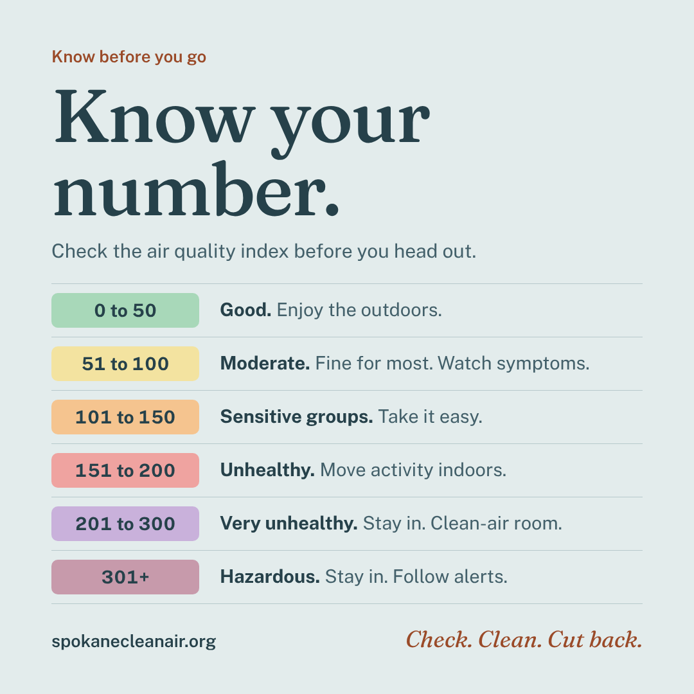
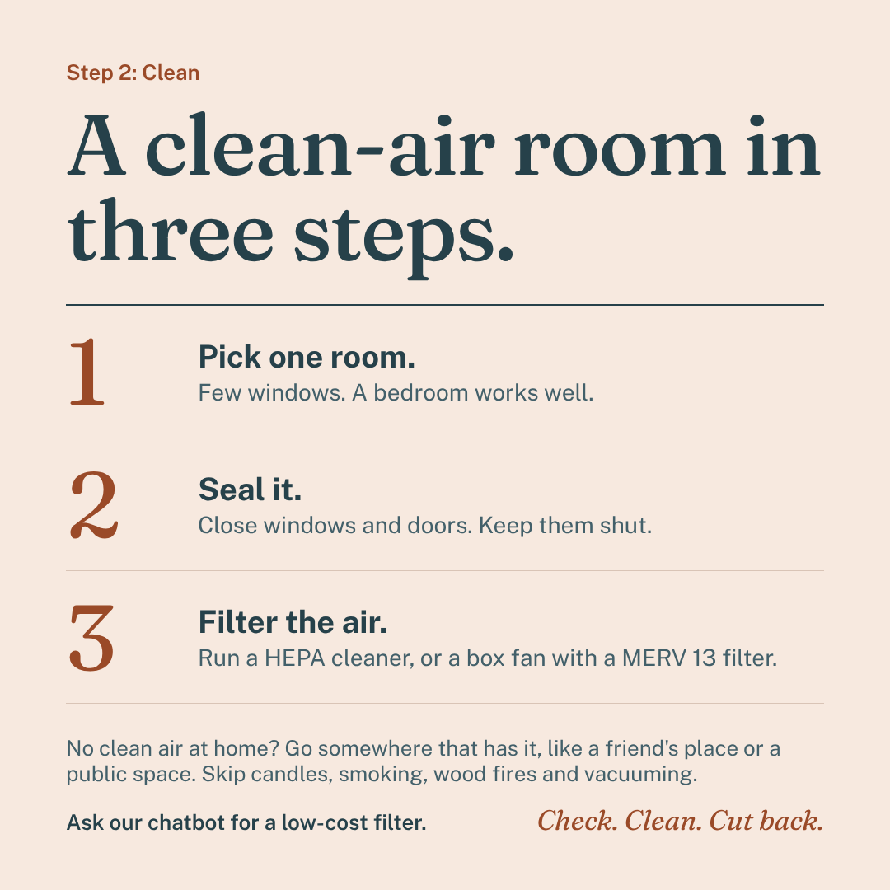
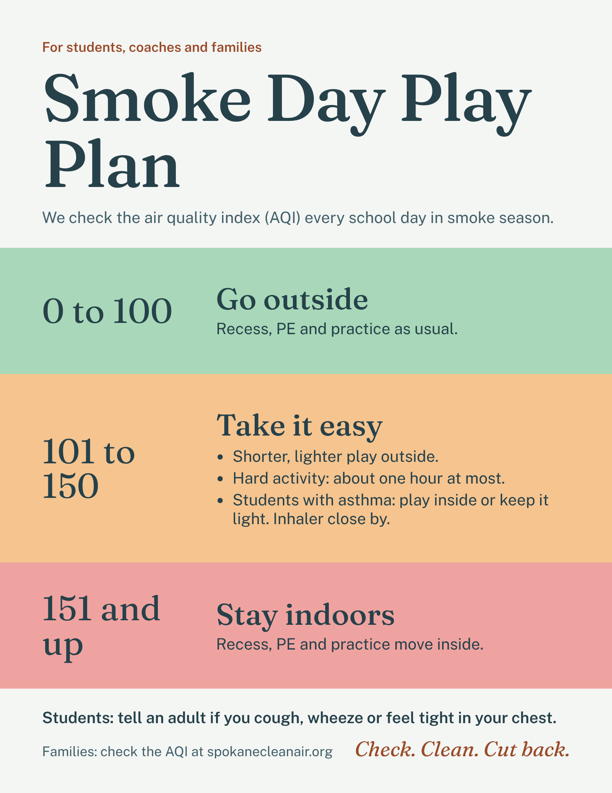
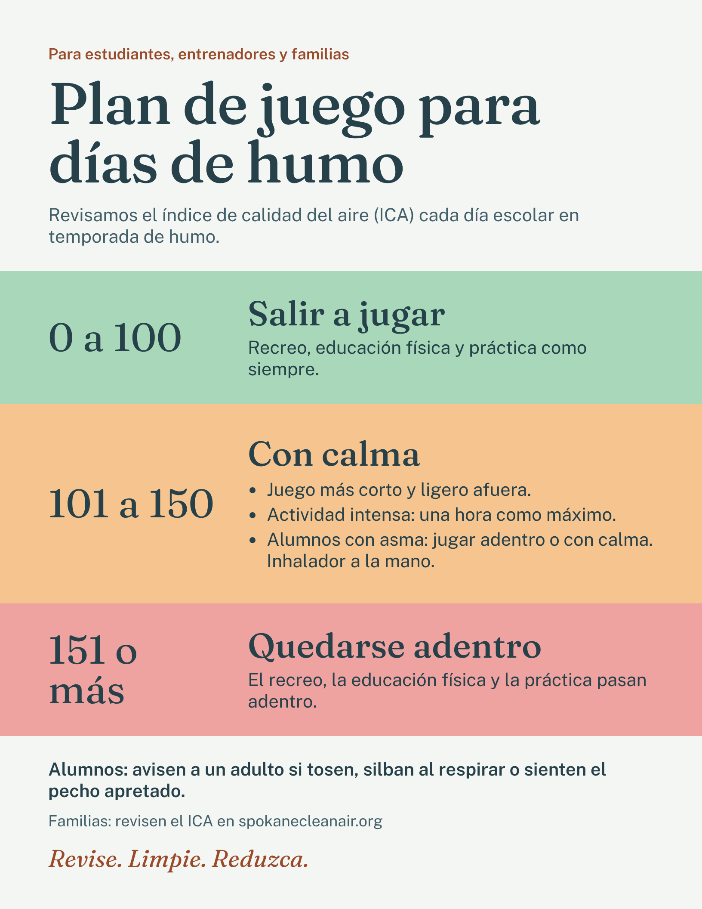
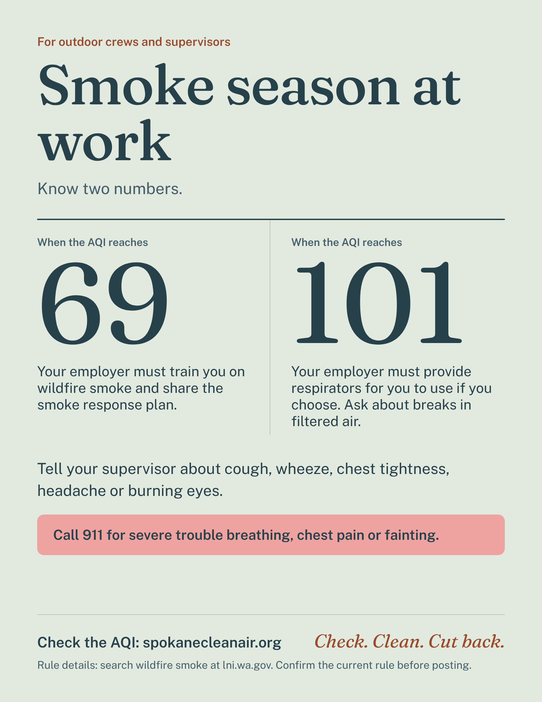
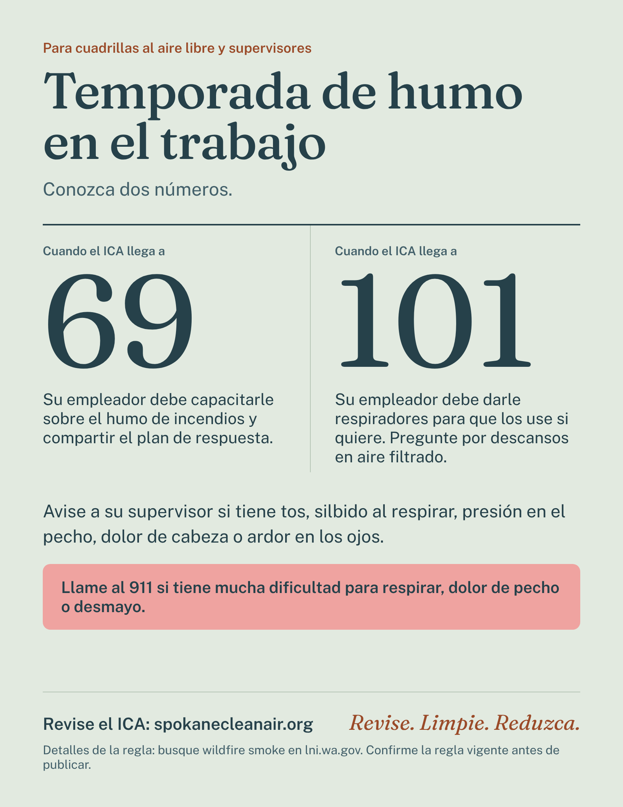

A health communication campaign for Spokane County
Smoke Smart Spokane
Check. Clean. Cut back.
We help families, coaches and outdoor crews turn one number, the Air Quality Index, into one clear action when wildfire smoke arrives.
1. The health issue
This summer showed how fast smoke can take over.
On August 1, 2026, three fires started around Spokane and became the Spokane Complex Fire. They burned nearly 10,000 acres, damaged or destroyed more than 900 structures, and sent about 60,000 people to evacuate. Our thoughts are with every family who lost a home.
The smoke reached everyone. Wildfire smoke carries tiny particles, called PM2.5, that go deep into the lungs and can set off asthma. Local health advice starts at AQI 101, while many school rules start at 150. We want every family to know their number and have a plan.
Affected by the fire? The City of Spokane wildfire page lists help. Inside city limits, call 3-1-1.
What makes this a communication problem
- The number is hard to use. An AQI of 135 means little without a category and an action.
- Rules do not match. Health advice starts at 101. Many school rules start at 150. Greater Spokane League practice rules were reported at 150 in 2022.
- Plans fade between events. Smoke has made the air unhealthy in almost every year since 2012. Quiet years lower our guard.
- Myths cause harm. Many people think healthy people are not affected, or that a dust mask protects them.
- Workers have rights that need clear messages. Washington's L&I rule starts at AQI 69 and adds duties at 101.
Campaign message
One number, three steps
Check
Look up today's AQI before you go out. It updates every hour, so check again before practice.
Clean
Make a clean-air room. Close windows, then run a HEPA cleaner or a box fan with a MERV 13 filter.
Cut back
Ease off hard outdoor activity as the number rises. Move recess and practice inside at 151 and above.
2. Population and audience
Who makes the call on a smoke day
Spokane County has about 558,000 residents. About 117,000 are children under 18. About 7.5 percent of residents are Hispanic. About 11 percent of public school students are Hispanic. About 12.6 percent of children live in poverty. The county has 18 school districts.
Parents and caregivers
Our main audience. They decide about outdoor play, sports and recess. We expect they use school messages, social media and local news. We will test this in our survey.
Outdoor workers and leads
Construction, landscaping and farm crews, and the supervisors who guide them. They hear news through toolbox talks and crew leads. Barriers include job pressure and unclear rights.
Coaches, teachers, nurses
They run recess and practice, and they know which students have asthma. They need one clear checklist, because thresholds differ by district.
Priority families
Spanish-speaking households, children with asthma, and homes without an air cleaner. Barriers include language access, cost and older housing.
Before launch, we would run a parent survey, four focus groups and ten interviews with coaches, nurses and supervisors. The results set the baseline for every objective.
3. Purpose, goals and objectives
Where we want to be by October 2027
Purpose: help people in Spokane County make smoke-day decisions with the AQI, and help schools and employers make those decisions easier.
Understand
Raise AQI literacy so people link a number to an action.
Act
Increase protective behaviors: checking the AQI, cleaning indoor air and cutting back.
Sustain
Build supports in schools, workplaces and policy so protection does not depend on memory.
| Objective | Measure | By |
|---|---|---|
| More parents name AQI 101 as the point to cut back | Up 20 points from baseline | Oct 2027 |
| More parents check the AQI before outdoor activity on smoky days | Up 15 points from baseline | Oct 2027 |
| Districts adopt a tiered Smoke Day Play Plan with a step at AQI 101 to 150 | 6 of 18 county districts | Aug 2027 |
| Coaches, teachers and nurses finish teach-back training | 150 trained | Sep 2027 |
| Employers adopt a smoke response plan and a toolbox talk | 25 employers | Jul 2027 |
| Open cleaner-air sites and deliver a policy brief | 8 sites in libraries or community centers | Jun 2027 |
| People use the chatbot and rate it helpful | 2,000 sessions. 75 percent of rated answers helpful. | Oct 2027 |
Timeline: formative research Jan to Apr 2027. Pre-season launch May to Jul 2027. Peak campaign Aug to Oct 2027. Evaluation Nov 2027.
4. Socioecological framework
Five levels, one message
A parent can learn the AQI and still face a school that keeps recess outside. So every level carries the same three actions.
Individual
Interpersonal
Organizational
Community
Policy
Policy shapes institutions. A shared county standard gives every school the same tiers.
Institutions shape relationships. Parents hear the same words from the coach, the nurse and the app.
Relationships shape individuals. People act on advice from someone they trust.
Influence also flows upward. When many families ask questions, schools and employers feel pressure to act. Checking the AQI and cleaning indoor air are prevention behaviors. Rothman et al. (2006) found that gain-framed messages work best for prevention. So our messages stress what people keep, such as "keep your family breathing easy".
5. Health literacy solutions
Make the number easy to read and easy to use
The AQI asks people to read a number, link it to a color and pick an action. Each step can fail. We expect numeracy, jargon and mixed rules to be the main barriers. We will check this in formative research.
1. Color, number, action
Every item pairs an AQI range with a color name and one short action. Color is never used alone.
2. Teach-back
The chatbot has a three-question quiz. Trainings end with: "Tell me what you will do at AQI 130."
3. Plain language
Short sentences, active voice and familiar words. We say "tiny smoke particles", not "particulate matter". We check drafts with the CDC Clear Communication Index.
4. Culturally responsive access
The school poster and worksite flyer have Spanish versions. Community reviewers, such as promotores, should check tone and terms before release. Images should show diverse families and crews.
5. Myth versus fact
We name myths directly. Dust masks do not stop smoke particles. Healthy people can be affected too.
6. Accessible design
All images have alt text. Text has strong contrast. Videos have captions. The chatbot works with a keyboard and a screen reader.
| AQI | Category | What to do |
|---|---|---|
| 0 to 50 | Good | Enjoy the outdoors as usual. |
| 51 to 100 | Moderate | Fine for most people. Watch for symptoms. |
| 101 to 150 | Unhealthy for sensitive groups | Take it easy. Keep hard activity to about one hour. Start a clean-air room. |
| 151 to 200 | Unhealthy | Everyone cuts back. Move activity indoors. |
| 201 to 300 | Very unhealthy | Stay in. Use a clean-air room. |
| 301+ | Hazardous | Stay in. Follow local alerts. |
6. Logic model
From resources to results
Read left to right. Each column feeds the next.
Inputs
- Health district, Spokane Clean Air, school districts, L&I
- Funding and a part-time coordinator
- Reviewers and community partners
- AirNow and DOH evidence
- Chatbot and website
- Air cleaners and MERV 13 filters
Activities
- Formative survey and focus groups
- Social media series
- School toolkit and tiered plan
- Teach-back trainings
- Worksite toolbox talks
- Clean-air sites and filter loans
- Policy brief and media outreach
Outputs
- Posts published and reach
- Districts using the plan
- Coaches, teachers, nurses trained
- Employers with a plan
- Chatbot sessions and quizzes
- Clean-air sites open
Short-term outcomes
- Higher AQI knowledge
- More confidence to act
- More people check the AQI
- More clean-air rooms
- Schools follow a tiered plan
- Workers get training and respirators
Long-term outcomes
- Habits that last across seasons
- Lower exposure for children and workers
- Fewer smoke-related asthma visits
- Shared county school standard
- Fairer protection for all families
Assumptions
People act when they understand the number and feel able to act. Trusted messengers raise follow-through. Institutional rules make the safe choice the default. Gain-framed messages work for prevention behaviors.
External factors
Smoke severity varies by year. Funding and partner capacity change. School and state policy calendars set the pace. Household cost and housing quality limit what families can do.
| Stage | Indicator | Data source |
|---|---|---|
| Outputs | Posts, reach, trainings, employers, clean-air sites, chatbot sessions | Platform analytics, sign-in sheets, partner logs |
| Short-term | AQI knowledge, confidence, checking the AQI, clean-room use | Pre and post surveys |
| Organizational | Districts and employers with a plan | Policy review, partner reports |
| Long-term | Smoke-related asthma visits, exposure behaviors, policy alignment | Partner health data, follow-up survey |
7. Campaign materials
Social, school and worksite
All materials share one look, one voice and the same three actions. The school poster and the worksite flyer also come in Spanish.
A. Social media

Post 1: Know your number
Smoke season is here. Know your number and keep your family breathing easy. Check the AQI before you head out. 0 to 100: go ahead. 101 to 150: take it easy. 151 and up: stay in. Check now at spokanecleanair.org. Questions? Ask our chatbot (link in bio). #SmokeSmartSpokane
Design logic: color, number and action in one glance. Color is never the only cue.


Post 2: A clean-air room in three steps
No air cleaner? Make a clean-air room in 3 steps. Pick one room. Seal windows and doors. Run a HEPA cleaner or a box fan with a MERV 13 filter. No clean air at home? Go somewhere that has it. Skip candles, smoking, wood fires and vacuuming. Ask our chatbot how to build a low-cost filter. #SmokeSmartSpokane
Design logic: three numbered steps build confidence. The low-cost option answers a cost barrier.

Bonus: 15-second video storyboard, "The Coach Checks"
- 0 to 3 sec. A coach checks a phone at the field. Text: "Check the number."
- 3 to 7 sec. The phone shows AQI 128 in orange. Text: "Orange? Take it easy."
- 7 to 12 sec. Players switch to a lighter drill. An inhaler sits on the bench.
- 12 to 15 sec. End card: "Check. Clean. Cut back." Captions on throughout.
B. School health communication


Smoke Day Play Plan
The poster uses three tiers that students learn quickly. The orange tier closes the gap between local health advice at AQI 101 to 150 and school rules that start higher. Districts can adapt the tiers.
Subject: Our smoke season plan
Dear families, wildfire smoke can make the air unhealthy. Each school day, our staff checks the Air Quality Index (AQI). At 0 to 100, outdoor play is as usual. At 101 to 150, outdoor play is shorter and lighter, and students with asthma may play inside. At 151 and up, recess and practice move indoors.
Please give your child's inhaler and asthma plan to the school nurse. You can check the AQI at spokanecleanair.org. Questions? Ask our chatbot or call the school nurse.
Coach and teacher checklist
- Check the AQI before practice and again at the midpoint.
- Apply the tier: green, orange or red.
- Know which students have asthma. Confirm each has a quick-relief inhaler.
- At orange, shorten hard activity to about one hour and offer a lighter option.
- At red, move indoors or cancel.
- Close with teach-back: ask two students, "What do we do at 130?"
- Note the AQI and the decision in the practice log.


C. Corporate and worksite health communication


Know two numbers
The flyer turns Washington's L&I rule into two numbers, 69 and 101. It speaks to workers and gives supervisors a script.
Five-minute toolbox talk
- Why it matters. Smoke particles are tiny. We breathe harder at work, so we take in more.
- Know two numbers. At AQI 69 or higher, we get training and a smoke plan. At 101 or higher, respirators are provided for anyone who wants one.
- Check. Name who checks the AQI each morning and midday, and where it is posted.
- Protect. Move hard tasks to cleaner hours. Take breaks in filtered air.
- Speak up. Tell your supervisor about cough, wheeze, chest tightness or headache. Call 911 for severe trouble breathing, chest pain or fainting.
- Teach-back. Ask two workers: "What will you do at AQI 105?"
Email to managers
Subject: Smoke season: two numbers for our crews
Team leads, wildfire smoke can affect our crews. Washington requires training at AQI 69 or higher. At AQI 101 or higher, we must provide respirators for voluntary use. Please post the flyer, check the AQI each morning and midday, and run the five-minute talk this week.


Check lni.wa.gov for the current text of the rule before real use.
Los textos en español de este prototipo se redactaron con ayuda de IA. Una persona hispanohablante debe revisarlos antes de usarlos.
The Spanish text in this prototype was drafted with AI help. A fluent community reviewer should check it before any real use.
8. Artificial intelligence in health communication
A health FAQ chatbot for smoke days
Ask a question. Type an AQI number, such as "AQI 130", for a plain-language action. Tap "Quiz me" for a teach-back check.
In an emergency, call 911. This chatbot runs in your browser and stores nothing.
How AI is used
The bot uses natural language processing. It turns each question into a TF-IDF vector and compares it with a reviewed bank of 21 answers by cosine similarity. It returns the closest answer and names the source. Rule-based layers add safety. Emergency words trigger a 911 message. An AQI number triggers a lookup of actions.
AI-assisted development
An AI assistant (Claude) helped draft the campaign text, the graphics code and the chatbot code. The student set the strategy and chose the sources. Health claims were checked against the public sources listed below. Please verify them before real use.
How it helps engagement
It answers at any hour, which matters when smoke changes by the hour. It turns a number into an action. The quiz uses teach-back. A live version could show which myths and gaps come up most.
Safeguards and limits
Answers come only from a reviewed list, so the bot cannot invent advice. It does not diagnose. It cannot handle every phrasing and says so when unsure. A future version could use a large language model on a secure server with the same safety rules.
Offline test: docs/chatbot-test.md lists 34 new paraphrased questions and the results. The bot answered 33 correctly on the first run. I then added keywords for the one miss, so the final score of 34 is optimistic.
9. Video presentation
Campaign walkthrough
References
Sources used
2026 wildfire and smoke
- Spokane Regional Clean Air Agency. News and notices (2026). spokanecleanair.org/news-notices
- The Spokesman-Review. (2026, August 13). Smoke from the Spokane Complex fires is dissipating, but wildfire season and health risks will stretch on. spokesman.com
- The Spokesman-Review. (2026, August 10). Large events canceled as air pollution settles into Spokane area. spokesman.com
- FOX 13 Seattle. Spokane Complex Fire: All evacuations lifted. fox13seattle.com
- FOX 13 Seattle. Spokane, WA wildfires almost fully contained after burning 10k acres. fox13seattle.com
- KHQ. Evacuations expanded for Spokane area fires (damage and containment updates). khq.com
- City of Spokane. Wildfire information. my.spokanecity.org/wildfireinfo
- Spokane Regional Health District. Wildfire smoke affecting local air quality. srhd.org
Local history and guidance
- The Spokesman-Review. (2025, October 29). The Spokane region quietly reached an air quality milestone. spokesman.com
- The Spokesman-Review. (2022, September 13). Air quality improves only slightly (Greater Spokane League rule). spokesman.com
- KREM. School districts taking steps to keep students safe from wildfire smoke. krem.com
- Mead School District. Air quality guide. mead354.org
- Spokane Regional Health District. Air quality at very unhealthy levels (2022). srhd.org
- 929 ZZU. High school games go ahead despite smoke (health officer advice for AQI 101 to 150). 929zzu.com
Workplace rule
- Washington State Department of Labor & Industries. (2022). Washington increases heat, wildfire smoke protections for outdoor workers this summer. lni.wa.gov
- Washington State Register WSR 24-01-070. Wildfire smoke rule text. leg.wa.gov
Population data
- USAFacts. Spokane County, WA population and age. usafacts.org
- USAFacts. Poverty rate in Spokane County, WA. usafacts.org
- USAFacts. Hispanic population share, Spokane County, WA. usafacts.org
- AllK12. Spokane County school enrollment. allk12.com
Theory and methods
- Rothman, A. J., Bartels, R. D., Wlaschin, J., & Salovey, P. (2006). The strategic use of gain- and loss-framed messages to promote healthy behavior. Journal of Communication, 56(s1), S202 to S220. doi.org
- W.K. Kellogg Foundation. (2006). Logic model development guide. naccho.org
- Centers for Disease Control and Prevention. CDC Clear Communication Index. cdc.gov/ccindex
- National Institutes of Health. Clear communication and plain language. nih.gov
- The Compass for Social and Behavior Change. Audience analysis and monitoring and evaluation guides. thecompassforsbc.org
Local figures come from news reports that cite agency data. Counts changed over time. Confirm current values with Spokane Clean Air and the Spokane Regional Health District before real use.